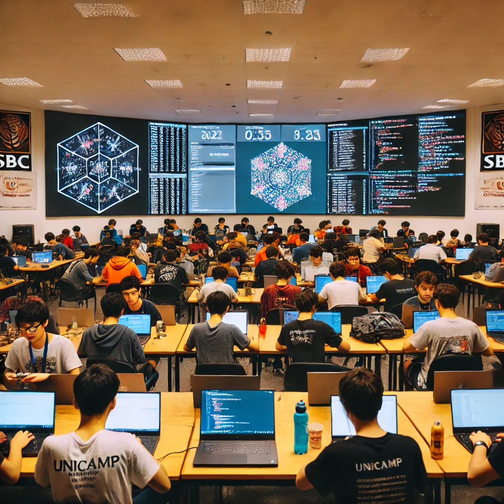

Maratona Fase Regional

A segunda fase das Maratonas de Programação SBC, também conhecida como fase regional, acontece após a fase inicial de seleção e envolve uma competição mais intensa entre as equipes classificadas. Ela funciona como um filtro para as finais nacionais e mundiais, sendo uma fase intermediária, onde apenas os melhores times avançam.
Maior Competitividade:
A fase regional tem um nível técnico mais elevado, pois apenas as equipes que tiveram sucesso na fase inicial participam. Nessa etapa, os desafios tendem a ser mais complexos e abrangem um conhecimento profundo de algoritmos, estruturas de dados e otimização de soluções.
Formato e Localização:
A fase regional geralmente acontece em várias sedes espalhadas pelo país. Cada região pode ter um número limitado de vagas para as finais nacionais. Os problemas são padronizados e distribuídos para todas as equipes simultaneamente, o que significa que todas as regiões competem com os mesmos desafios.
Problemas mais Desafiadores:
Os problemas tendem a ser mais complexos do que os da fase inicial, exigindo uma compreensão mais profunda de programação e matemática. Essa fase muitas vezes inclui problemas de otimização, teoria dos grafos, geometria computacional, e também questões sobre complexidade computacional.
Colaboração e Estratégia:
Embora a equipe deva ser eficiente na resolução dos problemas, a comunicação interna se torna ainda mais crucial nesta fase. A divisão de tarefas entre os membros é vital para o sucesso. Muitas equipes adotam metodologias ágeis para compartilhar o desenvolvimento de soluções e otimizar o tempo de codificação.
Avaliação e Classificação:
Assim como na fase inicial, a avaliação é feita com base no número de problemas resolvidos e no tempo total gasto para resolvê-los. Apenas as melhores equipes das fases regionais se classificam para a fase final nacional.
Mentoria e Feedback:
As equipes podem receber orientação de seus treinadores ou mentores, que ajudam a ajustar a estratégia de resolução de problemas e oferecem feedback sobre como melhorar a performance.
A equipe campeã da fase regional da Maratona de Programação SBC 2023 foi da Universidade Estadual de Campinas (Unicamp), com o time chamado "Eu já tenho meu veredito, FAKE AC." Os integrantes da equipe foram Luiz Henrique Yuji Delgado Oda, Yan Silva, e Bernardo Panka Archegas, com os coaches Naim Shaikhzadeh, Tiago Souza, e Fábio Luiz Usberti. Este time se destacou tanto na etapa regional quanto na final brasileira, sendo um dos principais representantes do Brasil na competição(Maratona SBC)(DCC UFMG).